Veterán
Velké kunratické
Časopis určený veteránkám, veteránům a všem příznivcům legendárního závodu
Číslo 8 / květen 2025
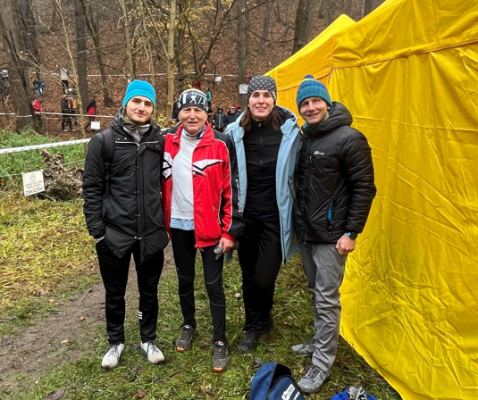
Pirk team aneb Pirkové tří generací na 91. Velké kunratické 2024. Známý kardiochirurg a sportovec profesor Jan Pirk se už léta se svými potomky účastní nejen Velké Kunratické, ale i mnohých dalších sportovních akcí. V posledních letech tvoří sestavu Pirk teamu Jan, syn Tomáš, Tomášova žena Vanda a vnuk Adam. Jan a Tomáš jsou veterány VK, spolu nasbírali už 71 startů (42 + 29).
Jan Pirk – lékař, sportovec, senátor
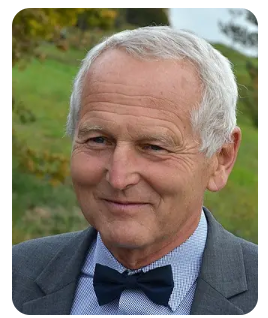
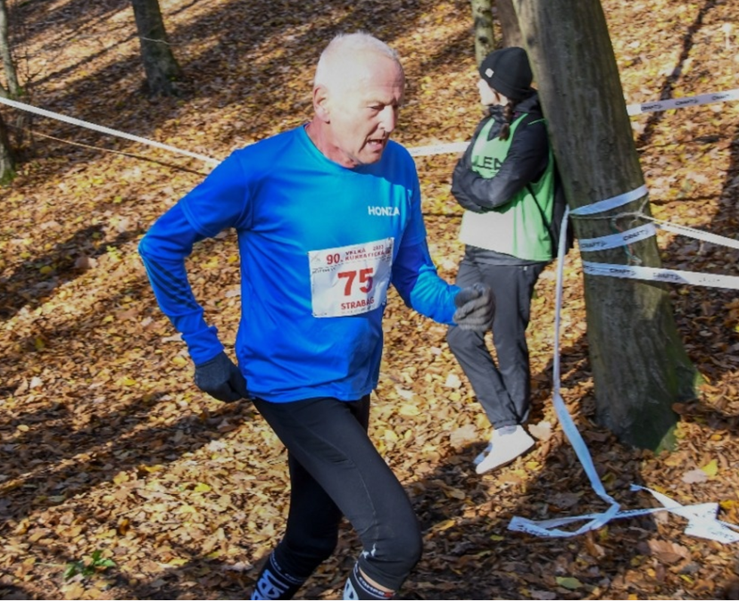
Profesora Pirka není třeba zvlášť představovat, přesto ve stručnosti: Prof. MUDr. Jan Pirk, DrSc., špičkový a světově uznávaný kardiochirurg. Od roku 1991 do 2017 přednosta Kliniky kardiovaskulární chirurgie IKEM, od roku 1995 přednosta kardiocentra IKEM, nyní emeritní přednosta kardiocentra. Působí též jako pedagog a od října 2022 je senátorem za pražský obvod 22 v Praze 10. I ve svém věku 77 let stále ještě operuje, zároveň si ale vychovává své nástupce. A také velký propagátor sportu a sám aktivní sportovec, který se účastní, a to velmi úspěšně, řady vytrvalostních závodů v běhu včetně maratonu, v cyklistice, běhu na lyžích a triatlonu.
Velmi jsem ocenil, že i při své vytíženosti souhlasil s rozhovorem pro 8. číslo „Veterána VK“. Mou snahou bylo, aby to byl rozhovor jiný, než ty, kterých Jan Pirk absolvoval nepočítaně, a snažil jsem se vyhýbat těm otázkám, které se v jeho rozhovorech opakují s železnou pravidelností. Proto jsem se neptal na fyzickou podobnost Jana Pirka s Paulem Newmanem, ani na to, jaké má pocity při sledování lidského těla, v němž během operace chybí srdce. Vzhledem k zaměření „Veterána VK“ se rozhovor týkal především sportu. Tykání v rozhovoru neberte jako nějakou neúctu, Jana Pirka jsem neoslovil jako uznávaného kardiochirurga nebo senátora, ale jako kamaráda sportovce, kolegu běžce z Velké kunratické. Rozhovor se uskutečnil v IKEM dne 13. února 2025.
Začnu poněkud netradičně. Když se řekne „veterán“, běžní sportovci našeho věku nepochybují o tom, že bude řeč o jejich sportování. U tebe má slovo „veterán“ dva významy. Vysvětli to, prosím.
Je to tak, už od mládí jsem sběratelem veteránů – aut, motocyklů, dokonce vlastním i čtyři velorexy. Některé jsou pojízdné, čehož ve volném čase rád využívám. Vedle sportu je to příjemný relax, kompenzace mého povolání. Kdybych měl říct, kterého veterána si nejvíc cením, byl by to asi Peugeot z roku 1913.
Je známo, že jsi velkým propagátorem sportu a sám jdeš příkladem. Které sporty považuješ (z hlediska veteránů) za nejvhodnější a které ty sám máš nejraději?
Nelze říct, který sport je obecně nejvhodnější, každému vyhovuje něco jiného a asi nejlepší je tyto aktivity střídat, o což se sám snažím. Kdybych měl z výběru chůze – běh – kolo – plavání – běžky jmenovat jeden sport, u mne by vyhrál běh na lyžích. Jde o pohyb v krásné přírodě, je to sport, který procvičuje a posiluje celé tělo a na rozdíl od klasického běhu při něm nedochází k nárazům a otřesům.
Prozraď, co všechno už máš ve sportu za sebou. Ve Velké kunratické jsi zasloužilým veteránem se 42 starty, co ostatní známé závody?
Z těch nejznámějších to je 37 startů v Běchovicích, Jizerskou padesátku jsem absolvoval jen 16x, začal jsem pozdě. Také triatlonů a jiných závodů mám za sebou hodně, ale přesný počet nevím – nevedu si přesnou evidenci.
Je známo, že vedeš ke sportu i své pacienty. Před časem se v tisku objevila zpráva, že jsi doprovodil bývalého běžce Stanislava Babáka, poté, co jsi mu transplantoval srdce, na start Velké kunratické. Spolu s ním jsi absolvoval celý závod, abys ho na trati hlídal. Máš ještě další podobné pacienty?
Své pacienty se snažím přesvědčit, aby žili aktivně, aby se pohybovali, a když je to možné, i rekreačně sportovali. Kromě pana Babáka mám pacienta, který po transplantaci srdce dokonce absolvoval olympijský triatlon (1,5 km plavání, 40 km kolo a 10 km běhu).
Musí tě těšit, že sportují i tví potomci. Kdo všechno z tvé rodiny startuje ve Velké kunratické a dalších sportovních akcích?
Mám dva syny a sedm vnoučat a většina z nich vícekrát startovala v Kunraticích i na jiných závodech. Máme rodinný Pirk team, ve kterém je v posledních letech nejčastěji kromě mě syn Tomáš, jeho žena Vanda a vnuk Adam. Od roku 2005 závodí v Kunraticích Pirkové tří generací.
S Pirk týmem se ale můžeme setkat i při jiných sportovních akcích. Přibliž nám, prosím, některé z nich.
Je to například maratonská štafeta (10 + 10 + 10 + 12 km), kde se mnou běží synové a finišuje vnuk Adam, nebo německo-český štafetový běh „Po stopách operace Cowboy“, což je závod z německého Eslarnu do Hostouně. Tam je povinná účast jedné ženy, takže běháme ve stejné sestavě jako v Kunraticích, s Tomášovou ženou Vandou. Tento běh jsme absolvovali třikrát a velmi si ceníme toho, že se nám dvakrát podařilo porazit silný tým americké armády.
Operaci Cowboy neznám, a myslím, že ani většina čtenářů. Co je to za závod?
Je to štafetový závod, který se běhá na počest vojenské bojové akce Američanů z roku 1945, kdy osvobodili zajatecký tábor v Bělé nad Radbuzou. „Cowboy“ proto, že při jedné akci navíc v Hostouni zachránili stádo 650 vzácných koní. Start je ve v německé obci Eslarn, předávky v Železné, ve Hvozdu a v Bělé, cíl na náměstí v Hostouni. První ročník se běžel v roce 2015, 70 let od konce 2. světové války.
Kdy by měl člověk začít sportovat, jak nejlépe vést děti ke sportu?
Aby člověk získal vztah ke sportu a lásku k pohybu, měl by začít co nejdříve, což je samozřejmě především úkol rodičů. U našich dětí a vnoučat jsme se o to vždy snažili. Za nejdůležitější považuji už předškolní věk a zhruba první tři roky ve škole. Děti v tom věku nemusí samozřejmě dělat naplno nějaký konkrétní sport, je ale dobré, aby ke sportu alespoň přičichly. Sport v mladém věku by měl být hrou. Důležitá je všestrannost, také se postupně pozná, co dítě nejvíce baví a k čemu má největší vlohy. Takovému dítěti pak vydrží láska ke sportu po celý život.
Jak se ty sám udržuješ v kondici a stále obdivuhodné sportovní formě? Co bys poradil ostatním veteránům?
Stále se snažím přiměřeně trénovat, důležitá je pravidelnost. Když můžu, jdu si zaběhat, z práce to mám do Krčského lesa kousek. Kromě Krče mám ještě další dvě běžecké lokality – na Vítkově (kde bydlím) a na chatě v Konojedech. Snažím se ale běhat kdekoli, běžecké boty si beru i na kongresy. Jedenkrát týdně si chodím zaplavat, když se v zimě dostanu na hory, tak běžkuji. Kdybych měl někomu radit, tak znovu zdůrazňuji pravidelný a přiměřený trénink, při kterém tepová frekvence nemá stoupnout nad hodnotu, která se vypočítá tak, že od čísla 220 odečteme věk, a z toho pak 60 až 75 %. Na co rekreační běžci často zapomínají, je cvičení a posilování. Já vstávám před půl šestou, cvičím a posiluji hlavně břišní a zádové svaly. U mne je to nutnost a prevence proti bolestem zad, musím kompenzovat dlouhé stání při práci, protože operace trvá i několik hodin. Časné vstávání doháním po obědě, někdy na mě padá ospalost, a když můžu, rád vypnu a dám si na chvíli „šlofíka“.
Tím se přece jen dostáváme k tvé profesi. Jak ve svém věku zvládáš operace a jak často operuješ? Kolik máš celkem za sebou operací a transplantací?
Stále mě to baví a svůj život bez práce si zatím neumím představit, i když operuji už méně než kdysi – například tento týden jsem byl na sále třikrát. Mám za sebou přibližně 7200 operací srdce a asi 310 transplantací a nějaké zcela jistě ještě přibudou. Samozřejmě se blíží čas, kdy s operováním skončím, takže si postupně vychovávám své nástupce. Jsou mladí a šikovní a nemám žádné obavy z toho, až jednou převezmou mé povinnosti.
Je známo, že v tvém rodu jsi už několikátou generací lékařů. Nemrzí tě, že synové se, pokud jde o profesi, nepotatili?
Je pravda, že v našem rodokmenu tvořím už čtvrtou doktorskou generaci, lékařem byl můj praděd, děd i otec. Jeden ze synů je manažer, druhý soudce. Že žádný z nich nebude doktorem, mě nijak netrápí, je to jejich život, vybrali si ho sami a jsou v něm spokojeni. Třeba se další doktor objeví v některé z dalších generaci.
Co považuješ za své největší životní úspěchy – v medicíně i ve sportu?
Pokud jde o mou profesi, dal jsem si za cíl vybudovat nejlepší komplexní kardiocentrum v republice, a to se myslím podařilo. Ve sportu byl asi největším úspěchem zisk zlaté medaile na Mistrovství Evropy v kategorii nad 65 let, kterou jsme spolu s Jardou Čechem a Vaškem Šejblem získali ve vytrvalostní štafetě. Cením si i několika prvenství ve věkových kategoriích nad 60 a nad 70 let ve Velké kunratické i v Běchovicích a několika medailí z MS a ME lékařů na běžkách a v triatlonu. O operaci Cowboy už byla řeč.
Vedle své práce jsi od roku 2022 též senátorem za pražský obvod 22 (Praha 10). Jak tě naplňuje práce senátora a kolik to zabírá času? Myslíš si, že jako senátor můžeš například ve zdravotnictví reálně něco změnit?
Povinnosti senátora beru velmi poctivě, nesmírně si vážím toho, že mě občané do této funkce zvolili. Až na výjimky se v Senátu setkávám s lidmi s velkou životní zkušeností, kteří svou funkci vnímají, stejně jako já, jako pomoc státu v oblastech, které jim jsou blízké. Je to poměrně časově náročné, ale protože jsem si zkrátil pracovní úvazek, dá se to zvládnout. Vzal jsem si za své tři priority, které jsem měl už ve volebním programu, a něco z toho se už daří realizovat. Zaprvé je to snaha, aby školní hodiny tělocviku na Praze 10 vedli sportovní trenéři. Děti to daleko víc baví a mají předpoklady k tomu, aby získali vztah ke sportu a ke zdravému způsobu života. Zadruhé je to prosazení lékařské pohotovostní služby, která na Praze 10 chyběla, časté několikahodinové čekání v ordinacích bylo pro pacienty neúnosné. Třetí má priorita rovněž souvisí se vztahem ke sportu a také s tím, že jsem Slávista. Stručně ji vyjadřuje heslo „vezmi babičku a dědu na fotbal“, což převzali i jinde v republice. Mimochodem, senátorskou kancelář mám na stadionu v Edenu.
Máš nějaký nesplněný sen (v medicíně, ve sportu či v životě), něco, co bys ještě chtěl v životě zažít?
Už jsem zmínil, že v kardiocentru jsem si své cíle splnil, a v podstatě to platí i ve sportu, kde v našem věku je cílem dostat se vždy zdravý do cíle. V životě bych se chtěl dožít klidného a spokojeného stáří.
Ptal se a odpovědi zaznamenal: Luděk Sedlák
Kombinované hodnocení veteránů Velké kunratické
Specifikem veteránské kategorie ve Velké kunratické je porovnávání výkonů podle tabulky kombinovaného hodnocení. Mnozí veteráni, zejména ti dříve narození, ji sledují s mimořádnou pozorností, protože umožňuje i starším věkovým kategoriím porovnávat se s těmi mladšími. Poprvé se neoficiální kombinované hodnocení objevilo už koncem šedesátých let a určovalo se prostým součtem pořadí výkonu, věku a zpočátku také počtu startů, říkalo se tomu „veteránský trojboj“. Po několika letech byl trojboj změněn na dvojboj (výkon a věk), ale pořadí se stále počítalo součtem pořadí v obou hodnocených kritériích. Výhodou byl jednoduchý výpočet, který při tehdejším malém počtu veteránů byl hotov prakticky současně s výsledkovou listinou. Systém měl ale i hodně kritiků, kteří volali po přesnějším a spravedlivějším výpočtu. Ten se zrodil v roce 1980 a platí dodnes, jeho autorem byl veterán Milan Čech. V obou kritériích se vezme jako základ průměrná hodnota výkonu i věku, každá je ohodnocena 100 body. U každého běžce se pak určí, o kolik procent je v daném kritériu lepší či horší než vypočtený průměr, a součet pak dá celkový výsledek. Sice se ukázalo, že tento systém poněkud zvýhodňuje starší veterány, především kategorii nad 60 let, protože u trénujících běžců jejich výkonnost klesá pomaleji než by odpovídalo rostoucímu věku, přesto se systém osvědčil a kombinovaná tabulka je dnes neodmyslitelnou součástí veteránských výsledků. Výpočet už zdaleka není tak jednoduchý, ale naštěstí jej usnadňuje současná výpočetní technika. Tím, komu už léta vděčíme za přesnou a včasnou tabulku kombinovaného hodnocení, je Jaroslav Večerník, veterán VK s 26 starty.
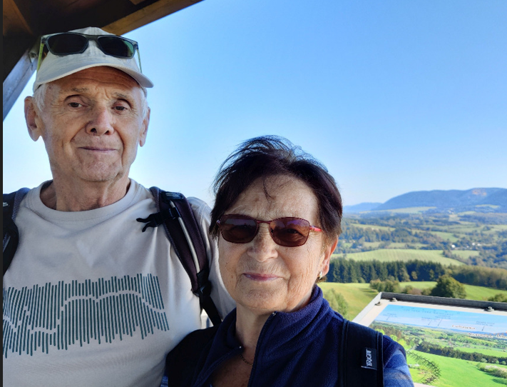 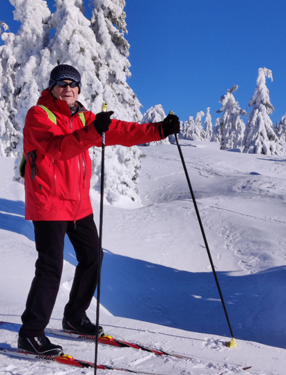
Dvakrát Jaroslav Večerník. Na první fotografii při turistice s manželkou, na druhé fotografii na běžkách. V tomto čísle VVK ještě najdete fotografii z Velké kunratické z roku 2004, kdy spolu s dalšími sportovci a funkcionáři obdržel ocenění Mezinárodního olympijského výboru.
Anketa pro Jaroslava Večerníka
Na následující otázky odpověděl Jaroslav Večerník mailem v lednu 2025.
Řekni něco o sobě (kde žiješ, čím jsi byl, co děláš teď, jaké máš zájmy, případně něco o rodině atd.).
Jsem čistokrevný Pražák z Michle od Botiče. Nikdy jsem neměl trvalé bydliště jinde než v Praze. V současné době žiju s první a poslední manželkou v Řepích ve vlastním bytě v paneláku. S naší jedinou dcerou a její rodinou máme vzájemně skvělý vztah. Všichni jsou kondiční sportovci, dcera je i účastnice VK. 42 let jsem pracovně strávil v jediném závodě ČKD Praha. Na různých postech a čím jsem byl, tím jsem byl rád. Typická konzerva. Šestnáctým rokem jsem v penzi a pořád se nemohu dostat k některým věcem, které jsem si předsevzal udělat, až v té penzi budu. Baví mě chalupaření, práce všeho druhu, mám rád les, hlavně když rostou. Nikdy jsem neměl žádný vyhraněný koníček, ale s kamarádem LJ máme společnou sbírku pivních etiket.
Jak ses dostal ke sportu, jakými sporty ses zabýval a jakých jsi dosáhl výsledků?
Pocházím ze sokolské rodiny, otec byl zapálený sokol, pracoval s mládeží. Do Michelské sokolovny pod Bohdalcem jsem to měl, co by kamenem dohodil, a pilně jsem už ne do Sokola, ale do Jiskry Michle docházel. Cvičení na nářadí mě bavilo. Co jsem tedy opravdu neměl rád, byla lehká atletika, zvláště pak běh, i když jsem se v soutěži o nejrychlejšího žáka Jiskry Michle umístil na 3. místě. Při studiu na kladenské hornické průmyslovce jsem začal se spolužákem trénovat sportovní gymnastiku a dotáhl to na dorosteneckého přeborníka okresu Kladno. No to jsou tedy úspěchy. Potom na vojně jsme si vybudovali na půdě baráku improvizovanou posilovnu, ale dostat se k jinému sportu bylo prakticky nemožné.
Jak ses dostal k Velké kunratické, co pro tebe VK znamená?
K Velké kunratické jsem se dostal nejprve jako dobrovolník z lyžařského oddílu Spartak Praha 4 při přihlašování závodníků, kdy tito stáli v dlouhé frontě před agitačním střediskem v Podolí. V útrobách agitačního střediska po ručním zapsání do startovní listiny a na proužek polokartonu pro vypočítání dosaženého času a zaplacení startovného obdrželi kýžené startovní číslo. Do Kunratic na závod jsem se byl i podívat, ale atletika mě stále nic neříkala. A pak najednou jsem začal s kamarádem LJ poklusávat, začalo to být totiž velmi moderní a ono to kupodivu nebylo zase až tak špatné. Nějak jsme objevili celostátní hnutí Liga stovkařů a seznámili se s Pavlem Frčkem, šéfem pražské pobočky. A jiný kamarád, šéf přihlašování závodníků a několikanásobný účastník VK Luboš Šafář nás vzal do lesa a prošel s námi trať s tím, že si to taky musíme zkusit. Při této exkursi jsme potoky obcházeli, často se zastavovali, ale do Hrádku jsme se vyhrabali a na vrcholu jsem nevěděl, jestli mám ještě nohy a ve spáncích mi tepalo. Ale nevzdali jsme to.
Vzpomínáš si na svůj první start ve VK? Který start (a čím) ti nejvíce utkvěl v paměti?
A protože jsme to nevzdali, při 46. ročníku jsme se přihlásili ke svému prvnímu startu. Na tento start nelze zapomenout. Trať jsme znali, ale potoky jsme brodili s největší opatrností hledáním vystouplých kamenů, místo razantního ťápnutí, které zabezpečí menší množství nabrané vody do bot, a na třetím potoku jsme měli kamaráda pořadatele, který nás škodolibě směroval do té nejhlubší vody. Opravdu nezapomenutelné. VK je pro nás oba srdeční záležitost, dnes už jenom v roli dobrovolníků. 26 ročníků nepřetržitě jsme startovali spolu ve dvojici. A to i po získání statusu veterán VK, když Pavel Frček toho staršího z nás, tedy LJ, znevýhodňoval přidělením vyššího startovního čísla. Kamarád LJ se jmenuje Luděk Jiran a jsme spolu svázáni i jinak než stran VK.
Jak ses dostal k tvorbě kombinovaného hodnocení veteránů VK?
S Pavlem Frčkem jsem v rámci TJ kondičního běhu LIGA 100 Praha, kterou Pavel založil a stal se pak jejím dlouholetým předsedou, rád spolupracoval. Když Pavel řekl „neudělal bys“, nebo „je potřeba“, nebo „musí se zařídit“ atd., vždycky jsem řekl „tak jo“. No a tak, když Milan Čech, matematik, který dal současné kombinované tabulce základní podobu, onemocněl tak, že už bylo nad jeho síly tabulku vytvářet, snad v roce 2009, přišel Pavel s dotazem, jestli bych to nezkusil převzít, když ovládám základy excelu. A já řekl tak jo. Musel jsem na začátku dost věcí opravit, pak došlo i na rozšíření a snad i vylepšení. Řekl bych, že je současná kombinovaná tabulka spravedlivá a možná i trochu zábavná.
VK sice už neběháš, co ale ostatní sporty? Prozraď, zda a jak se udržuješ v kondici.
Bohužel mezi své kondiční aktivity už nemohu počítat běhání, před 20 lety jsem si vlastní velkou nepozorností způsobil ne právě lehký chalupářský úraz obou nohou. Kondiční sport jsem ale neopustil, rád se projedu na kole, sklouznu na běžkách, udělám turistickou túru. Tyto aktivity se mnou vesměs sdílí manželka a co do délky tras je vůdčí osobností, čímž chci říct, že já bych si raději přidal. Mezi hýbací aktivity řadím i svoji ranní posilovací a protahovací rozcvičku trvající cca 50 minut, tak pětkrát do týdne.
Jaké máš ještě plány, případně zda máš nějaký sen, který by sis ještě chtěl splnit?
V hlavě mám nějaké malé chalupářské projekty, které se buďto uskuteční a já budu mít dobrý pocit, anebo neuskuteční a svět se nezboří. Sen? Sen mám, ale nemůžu si ho splnit sám o své vůli. Navštívit Nový Zéland, to by třebas šlo, ale už mě to opustilo. Mně je docela dobře, skoro nejlíp, v Kanadě (České) na chalupě. A ten sen se váže k Velké kunratické. Chtěl bych se dožít 100. ročníku.
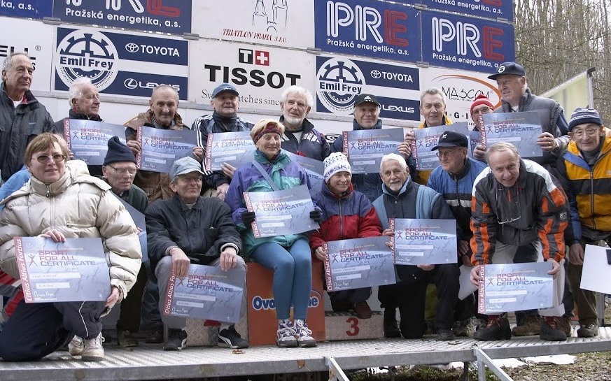
Sportovci a sportovní funkcionáři, kteří byli při Velké kunratické dne 14. listopadu 2004 oceněni certifikátem Mezinárodního olympijského výboru „Sport pro všechny“, podepsaným předsedou MOV Jacquesem Roggem. Jacques Rogge byl po Juanu Antoniu Samaranchovi dalším předsedou MOV, kterého zaujal náš závod. Na společném snímku stojí Jaroslav Večerník v horní řadě pod písmenem „I“. Fotografii využijeme též pro další úkol a soutěž pro naše čtenáře. Napište nám prosím (nejlépe mailem na adresu uvedenou na poslední straně v tiráži časopisu), které z oceněných osobností jste poznali, vesměs jsou spjati s Velkou kunratickou. Jejich seznam přineseme v příštím čísle VVK. FOTO: Archiv Jaroslava Večerníka
Pohodlné hledání ve starých výsledcích Velké kunratické
Na webových stránkách Velké kunratické (www.velkakunraticka.cz) si můžete vyhledat nejen aktuální výsledky právě skončeného ročníku, ale také výsledky ročníků starších i dávno minulých. Pohodlně najdete své vlastní výkony, stejně tak výkony svých přátel a soupeřů. Výsledky na webu sice nesahají až do prvopočátků našeho závodu, zatím jen zhruba do poloviny 70. let, určitě jste si ale všimli, že se postupně doplňují. Konstatování, že „se postupně doplňují“, je ale neúplné a kdybychom u něj skončili, vyjádřili bychom velkou neúctu tomu, kdo se o ono doplňování stará. Jde o úmorné přepisování výsledků ze starých originálních výsledkových listin, často špatně čitelných a mnohdy s chybami ve jménech či datech narození. Jistě si umíte představit, že jde o mravenčí, časově mimořádně náročnou, ale na druhé straně velice záslužnou práci, kterou si na svá bedra vzal veterán VK Karel Schestauber. Vedle této práce pro Velkou kunratickou též píše články a rozhovory do serveru Běhej.com, do časopisu Atletika a podílí se i na dalších literárních aktivitách, o nichž si ostatně za chvíli budete moci přečíst. Těm z vás, kteří Karla Schestaubera dosud neznají, se v následujících řádcích sám představí.
Čtenářům VVK se představuje veterán Karel Schestauber
Můj života běh
Vyběhl jsem na svět na Silvestra 1951 v Praze v porodnici na Královských Vinohradech. Netušil jsem, že tento den budu mnohokrát běhat Silvestrovský běh zde, v Riegráku.
Dětství a mládí jsem prožil na Žižkově, kde jsem chodil do ZDŠ v Cimburačce. První atletické závody za školu jsem absolvoval v sedmé třídě v Jesenince, a to ve čtyřboji (50 m, dálka, hod míčkem a 300 m) v rámci SHMP (Sportovní hry mládeže a pracujících) a získal druhé místo. Později jsem v devítce za školu absolvoval další závody na Kotlářce (v Dejvicích). Když jsem na stupních přebíral od „Otce Jandery“ (Otakar Jandera, náš prvorepublikový reprezentant na 110 m překážek) gratulaci za vítězství na 500 m, řekl mi své obvyklé: „Není důležité zvítězit, ale přijít znova.“ Na to jsem mu odpověděl, že jsem tam potřetí, neboť jsem byl před tím třetí na 60 m a ve vrhu koulí. Otec Jandera se zarazil a pravil: „To je dobře, to je dobře“.
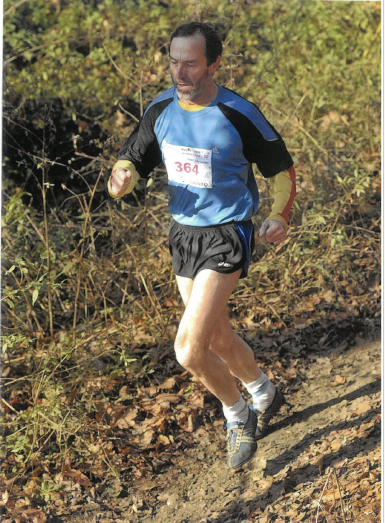
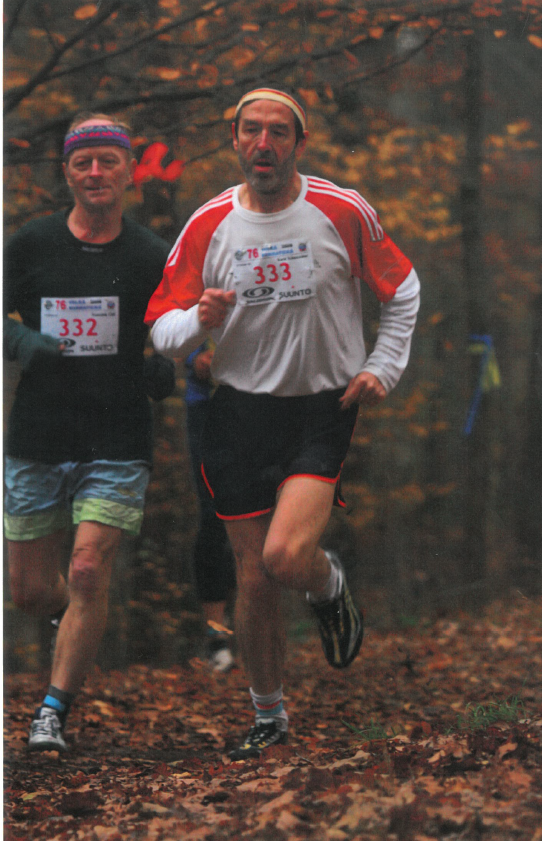
Karel Schestauber na trati Velké kunratické. Poprvé v roce 2008, podruhé s magickým číslem 333 v roce 2009. Jeho soupeřem s číslem 332 je František Cipl.
Na gymplu na Slaďárně (pro toho, kdo není Pražák: Gymnázium Sladkovského v Praze na Žižkově) jsem reprezentoval každý rok na Středoškolských hrách v běhu na 1000 m a poslední rok jsem překonal rekord školy opět ve čtyřboji (100 m, dálka, koule 5 kg a 1000 m).
Na FEL (ČVUT) jsem běhal za školu 800 m.
Na jednoroční vojně v Českých Budějovicích jsem dělal vedoucího oddílu orientačních běžců. Běhali jsme na Šumavě kolem Vimperka.
Od roku 1965 do 1995 jsem byl členem atletického oddílu Slavia Praha (v roce 1965 Dynamo Praha), kde jsem závodil od žáků až po veterány. Spolu s Alešem Másilkem a Milošem Smrčkou jsme běhali Národní ligu. Nejlepší z nás byl Aleš Másilko, který se díky své výkonnosti dostal do první ligy. Spolu se Smrčkou, Petrem Davídkem a Vráťou Sieglerem jsme v roce 1978 vyhráli přebor Prahy na 4x400 m. Ve Slávii jsem také pracoval ve výboru oddílu, kde jsem dělal vedoucího STK (sportovně technické komise) a vedoucího B-družstva, za které jsem současně běhal. A také asistenta vedoucího u prvoligového A-družstva.
Běchovice i Velkou kunratickou jsem začal běhat od roku 1976. Kromě toho jsem rád absolvoval řadu dalších závodů: Běhy olympijského dne, Běh Hostivařskou přehradou (zde jsem dělal jeden rok i ředitele závodu), Běh kolem Hostivařské přehrady, Běh historickým Vyšehradem Dvě míle s úsměvem a mnoho dalších. Rád vzpomínám na Běh Vyšehradem, kde po doběhu za námi přišel Emil Zátopek a velice dobře jsme si s ním popovídali.
Od roku 2004 jsem běhal v rámci PIM (později Czech Run) půlmaratony (17x) a maratony (16x). Běhal jsem je do svých 71 let.
V současné době jsem členem dvou běžeckých oddílů, a to Pražské Ligy 100 (kde jsem byl také několik let ve výboru a organizačně měl na starost Veteránskou 5) a BONBONU (Běžecký oddíl neambiciózních běžců). Kromě toho chodím běhat do Prokopského údolí, a to ve středu (podle té středy si říkáme výstředníci) a v pátek (pro změnu zpátečníci, od běžců z pátku) s partou z Barrandova. Vzniklo to původně jako iniciativa časopisu Behej.com. V Prokopáku jsem také potkal Roberta Štefka, když ještě bydlel v Jinonicích, a pár kiláčků si s ním zaběhal, bylo to rychlé a náročné.
Na jaře a v létě, když jsme s ženou na chalupě, rád běhám (obzvlášť se svým synem) v okolí Třemšína, kde jsou nádherné lesní běžecké trasy. Zde jsem například v rámci Běhej lesy (Běhej Brdy) absolvoval 22 km ze Skořice a zpět. U Prahy to zase bylo 13 km při Běhej Karlštejn.
Co se týká mého neběžeckého života: Po škole jsem nastoupil do Energoprojektu, kde jsem 16 let projektoval elektrárny, a to jak klasické, tak i jaderné, a také teplárny (například Temelín, Dukovany, Mochovce, Mělník, České Budějovice atd.).
Po skončení Energoprojektu v roce 1991 (odešlo 2500 zaměstnanců) jsem pracoval 10 let v bankovnictví a pak 15 let ve Státním fondu životního prostředí. Odtud jsem odešel v 65 letech do důchodu.
V důchodu jsem navázal na svůj dřívější koníček, kdy jsem psal články a rozhovory do Běhej.com a píši nyní i do časopisu Atletika. Dělal jsem poradce spisovateli Pavlu Kosatíkovi při tvorbě druhé verze Emila běžce, což ocenil v knize v závěrečném poděkování a také tím, že mě vzal na knižní veletrh do Stromovky, kde jsme spolu, z podia, odpovídali na dotazy posluchačů a podepisovali se při autogramiádě. A také třetím rokem dělám lektora sportovní části české verze Guinnessovy knihy rekordů.
Prostě mě baví atletika a sport prakticky i teoreticky. A doufám, že ještě hodně dlouho budou!
Hra čísel ve Velké kunratické
V minulém čísle VVK jsme otiskli fotografii otce Petra a syna Josefa Matiáškových s jejich startovními čísly 13 a 313. Na další pozoruhodnou podobnost nás upozornil veterán Michal Ezechiáš, který v posledních dvou ročnících startoval s číslem 12 (viz foto), jeho mladší bratr Ivo měl vloni startovní číslo 112. Do třetice mohu přispět sám se svou trochou do číselného mlýna. Už léta jezdím do Kunratic se svou dcerou Terezou a sami se podívejte na takřka neuvěřitelnou podobnost našich startovních čísel v posledních ročnících.
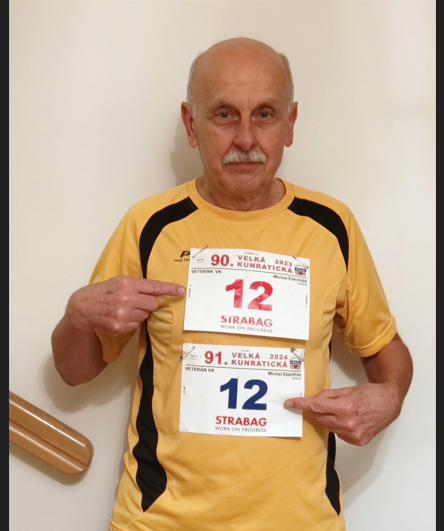
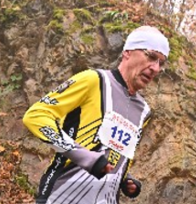
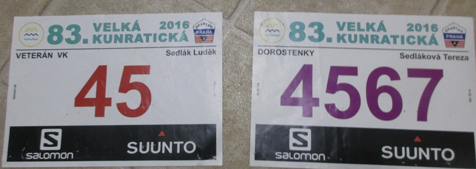
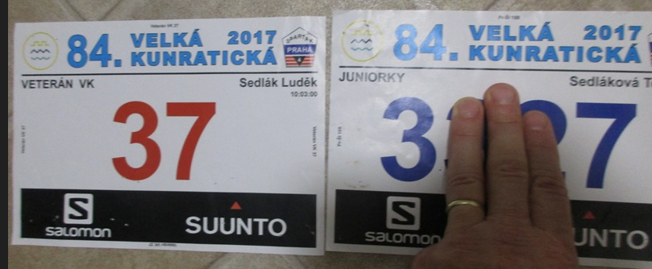
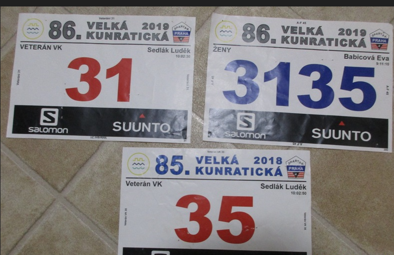
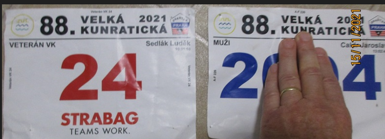
| Jména na Terezčiných číslech v 86 a 88. ročníku neodpovídají proto, že jsme čísla koupili až na startu od neběžících účastníků. Do této hry čísel můžeme při troše obrazotvornosti zařadit i další fotografie z tohoto vydání VVK. Na straně 2 je Jan Pirk, který má v 90. ročníku z roku 2023 číslo 75, shodou okolností mu v té době bylo 75 let. S magickým číslem 333 na straně 8 běží Karel Schestauber. Když si projdete jeho výsledky ve VK, přesvědčíte se, že nejlepšího celkového umístění dosáhl v roce 1979, kdy skončil (jak jinak) 333. | LS |
Rok 2024 – zatím poslední 91. Velká kunratická
Hlavní mužská trať v Kunraticích má nového vítěze. Stal se jím junior Daniel Bolehovský (v minulém čísle VVK jsem ho omylem „překřtil“ na Davida, za což se dodatečně omlouvám), který využil absence trojnásobného vítěze Michala Šmahela a v přímém souboji těsně porazil nejvážnějšího konkurenta Jakuba Glonka. Glonek tak navázal na své 2. místo a téměř stejný čas z roku 2022. Naproti tomu Bára Stýblová zopakovala loňské prvenství na obou ženských tratích a tohoto cenného double (mužům zapovězeného) dosáhla už potřetí. Druhé místo na obou tratích vybojovala Anna Šimková. Za pozornost stojí dvě 4. místa Pavla a Natálie Brlicových v celkovém pořadí mužů a žen, Natálie navíc přidala 3. místo mezi ženami na trati s Hrádkem.
Výsledky 91. ročníku 2024 – celkové pořadí hlavní kategorie:
| 1. Daniel Bolehovský | 12:12,8 | 6. Ondřej Svěchota | 12:47,4 | |
| 2. Jakub Glonek | 12:16,0 | 7. | Jiří Kopáč | 12:49,2 |
| 3. Tomáš Hudec | 12:17,0 | 8. Jan Halberštát | 12:49,6 | |
| 4. | Pavel Brlica | 12:33,1 | 9. Ondřej Fejfar | 12:50,9 |
| 5. Jakub Mařík | 12:46,3 | 10. Lukáš Havlík | 12:57,9 |
Bolehovský a Mařík startovali v kategorii do juniorů, Kopáč v kategorii 40 – 49, ostatní z první desítky v kategorii do 39 let.
91. ročník – kategorie žen: 91. ročník – ženy Hrádek:
| 1. Bára Stýblová | 7:33,0 | 1. Bára Stýblová | 14:02,6 |
| 2. Anna Šimková | 7:37,4 | 2. Anna Šimková | 14:57,0 |
| 3. Kamila Gregorová | 8:01,0 | 3. Natalie Brlicová | 14:58,8 |
| 4. Natalie Brlicová | 8:07,9 | 4. Romana Lojková Rudolf | 15:15,5 |
| 5. Kateřina Štěpová | 8:08,0 | 5. Kateřina Hanušová | 15:42,6 |
Veteránům vládli Petr Pechek a Zuzana Mikulová
Mezi veterány zvítězil podruhé Petr Pechek a chybí mu jediné vítězství k tomu, aby v počtu prvenství dostihl svého otce Františka. Také další místa patří mladým veteránům, Flašarovi (1986), Kubričanovi (1984) a Šedivému (1984). Do veteránské kategorie žen jako kometa vlétla Zuzana Mikulová, která zvítězila s přesvědčivým náskokem půl druhé minuty. V kombinovaném hodnocení veteránů neotřesitelně vládne už celé desetiletí Miloš Smrčka, stálicí je i druhý Zdeněk Laciga a také většina dalších míst v první desítce se s malými obměnami rok co rok opakuje. Všichni jsou následováníhodným příkladem sportovní dlouhověkosti a právem jim patří velký obdiv. Totéž lze napsat i o našich veteránkách, v první řadě o vítězce kombinace Marušce Pštrossové, která na nejvyšší příčku vystoupila podruhé za sebou.
VK 2024 – veteráni (308 startujících)
| 1. Petr Pechek | (1983) | 13:18,0 | 6. Martin Gabla | (1976) | 14:58,5 |
| 2. Jan Flašar | (1986) | 13:42,0 | 7. Oldřich Vodička | (1977) | 15:09,4 |
| 3. Lukáš Kubričan | (1984) | 13:42,4 | 8. Adam Císař | (1981) | 15:21,0 |
| 4. Jan Šedivý | (1984) | 14:14,7 | 9. Michal Danda | (1974) | 15:28,4 |
| 5. David Michalička | (1980) | 14:57,6 | 10. Jan Herda | (1983) | 15:32,9 |
VK 2023 – veteráni kombinované hodnocení
| 1. Miloš Smrčka | (49 startů, 1954) | 249,38 | 6. Milan Růžička | (48, 1955) | 235,52 | |
| 2. Zdeněk Laciga | (51, 1952) | 240,94 | 7. Miroslav Fliegl | (31, 1954) | 234,80 | |
| 3. Jiří Suchý | (45, 1959) | 237,71 | 8. František Pechek | (49, 1953) | 233,34 | |
| 4. | Pavel Eliáš | (47, 1949) | 236,41 | 9. Jan Pirk | (42, 1948) | 232,04 |
| 5. Jiří Nohava | (40, 1953) | 236,36 | 10. Aleš Špičák | (47, 1955) | 231,03 |
VK 2024 – veteránky (25 startujících)
| 1. Zuzana Mikulová | (1979) | 08:50,3 | 4. Kristina Jakubcová | (1981) | 10:49,1 |
| 2. Radka Fafejtová | (1979) | 10:28,5 | 5. Jaroslava Dobiášová | (1973) | 10:55,3 |
| 3. Klára Kobosová | (1975) | 10:54,8 | 6. Michaela Jungová | (1973) 10:56,8 |
VK 2023 – veteránky kombinované hodnocení
| 1. Marie Pštrossová (25 st., 1959) | 221,11 | 4. Zuzana Mikulová | (21, 1979) | 212,59 | |
| 2. Alena Flieglová | (22, 1962) | 219,38 | 5. Jana Drábková | (28, 1961) | 211,90 |
| 3. Ilona Koubková | (37, 1956) | 219,26 | 6. Karolína Jeníková | (29, 1968) | 210,57 |
Aby byl náš výsledkový servis z posledního ročníku kompletní, uvedeme i jména vítězů jednotlivých věkových kategorií, včetně mládeže. Třeba mezi nimi najdeme budoucí vítěze hlavní kategorie, a kdo ví, možná, že jednou i budoucí veterány. Junioři – Daniel Bolehovský 12:12,8; muži do 39: Jakub Glonek 12:16,0; muži 40-49: Jiří Kopáč 12:49,2; muži 50-59: Jaroslav Vítek 13:27,9; muži 60-69: Tomáš Janovský 15:16,4; muži 70+: Miloš Smrčka 16:22,3; muži 80+ (zatím neoficiální kategorie): Václav Šejbl 24:27,0; dorostenci: Adrian Hromek; žáci starší: Albert Dolejš; žáci mladší: Maxim Strangmüller; kluci starší: Alexej Rollier; kluci mladší: Petr Fišer; juniorky: Kateřina Štěpová 8:08,0; ženy do 29: Bára Stýblová 7:33,0; ženy 30-39: Romana Lojková Rudolf 8:15,7; ženy 40-49: Kamila Gregorová 8:01,0; ženy 50-59: Simona Mandová 9:21,0; ženy 60+: Jindra Zahálková 11:02,0; dorostenky: Hana Vítková; žákyně starší: Petra Buganová; žákyně mladší: Julie Klimešová; děvčata starší: Jolana Matulová; děvčata mladší: Johana Fusková.
Pohled do historie Velké kunratické
Snad vás potěší pohled do historie Velké kunratické, v němž si připomeneme jména zakladatelů a vítězů prvních devatenácti ročníků. V dobových komentářích, které přetiskujeme z první ročenky vydané k 20. ročníku v roce 1953, si všimněte hodnocení netradičních kategorií (sprinteři, vrhači, cyklisté a další kategorie podle sportu či povolání), přezdívek a rozlišování účastníků na „naše“ (z pořadatelského oddílu) a ostatní. Za zmínku stojí kategorie „starých hochů“, která se poprvé objevuje u 12. ročníku v roce 1945. Bez zajímavosti nejsou ani počty startujících, s dneškem nesrovnatelné. Pro zachování autentičnosti jsme na textu (s výjimkou evidentních překlepů) nic neměnili, včetně původní dobové gramatiky. Pouze jsme u některých závodníků doplnili chybějící časy, které, jak jistě uznáte, rovněž stojí za pozornost.
I – 1934: 21 startujících. Vyhrál Fojtík v čase 13:14 před Obešlem 13:31 a Otáhalem 14:21, ze sprinterů byl první Kněnický 15:31, ze skokanů Šuchma 15:47.
II – 1935: 29 startujících. První Obešlo 13:26,2 před K. Malým 14:01,5 a Vondřejcem 14:11,8, ze sprinterů 1. Schwär 15:07,2.
III – 1936: 41 startujících. 1. Otáhal 13:35 před Obešlem 14:18 a Blomanem 14:29.
IV – 1937: 28 startujících. 1. Obešlo 14:05 před Prokopcem 14:25 a Mocem 14:45. Z vrhačů 1. Berta Štorkán 14:57, z tennistů 1. Dostál 15:51, ze sprinterů 1. Eman Černý (Černoch) 16:28.
V – 1938: 24 startujících. 1. Král 14:32 před Obešlem 15:00 a Vondřejcem 15:06, 4. vrhač Štorkán 15:15, 5. překážkář Nero-Novotný 15:24, z tennistů Dostál 16:39.
VI – 1939: 35 startujících. Král Fr. zlepšuje rekord trati na 13:19 (Pozn. L.S.: Autor ročenky se zmýlil, Fojtíkův rekord z 1. ročníku zůstal nepřekonán.) před Otáhalem 13:42 a Novotným-Nero 14:06, 4. Štorkán 14:29, sprinter Schwär 9. časem 15:35.
VII – 1940: 33 startujících. 1. Otáhal 13:52 před Obešlem 14:08 a Novotným-Nero 14:41, tennista Dostál 8. – 15:53, sprinter Schwär 9. – 16:16.
VIII – 1941: 37 startujících. 1. Obešlo 13:36 před K. Malým 14:05 a Otáhalem 14:13. Nero 14. – 15:28, tennista Dostál 19. v čase 15:57, sprinter Kněnický 20. – 16:07, cyklista Jung 22. – 16:36, vrhač Štorkán 23. – 16:50.
IX – 1942: 31 startujících. 1. Obešlo 13:25,6 před Nero 14:14,2 a Otáhalem 14:22,6, 8. Kreuzer 15:00,6, z lékařů 1. Kabátník 15:17,6, cyklista Jung 13. – 15:22, sprinter Kněnický 18. – 15:51.
X – 1943: 62 startujících. 1. Obešlo v novém rekordu 13:10, 2. Novák Johny 13:32, 3. Otáhal 13:33, 8. cyklista Cihlář 14:33, vrhač Štorkán 9. – 14:43, překážkář Nero 12. – 14:59, lékař Dr Kabátník 18. – 15:29, tennista Dostál 19. – 15:52, sprinter Kněnický 21. – 16:04, tyčkař Bém 30. – 17:10.
XI – 1944: 43 startujících. 1. opět Obešlo 13:20,2 před Dr Otáhalem 13:26,6, 3. host Štrupp z SNB 13:40,4, 4. Čuhel 13:54,6, 5. Zoulek 14:09,6, cyklista Šašecí 7. – 14:36,4, vrhač Štorkán 10. – 14:41,6, Kněnický 21. – 15:37,6.
XII – 1945: 59 startujících. Překvapil vítězstvím mílař Dr Čuhel 13:41,8 před Johny Novákem 13:43 a Dr Otáhalem 13:45, vrhač Štorkán 5. – 14:15,4, cyklista Cihlář 6. – 14:16, překážkář Nero 9. – 14:34, Obešlo až 12. – 14:39,8. Vondřejc poprvé v kategorii starých hochů 15. – 14:51,8 před 16. Ing Kreuzerem15:05,8.
XIII – 1946: 73 startujících. 1. Novák Johny 13:30 před Otáhalem 13:30,2, Stáhlíkem 13:50 a Obešlem 13:53. Překážkář Nero 9. – 14:37, vrhač Štorkán 13. – 15:09, sprinter Kemr 15. – 15:18, cyklista Šašecí 17. – 15:20,2, ze starých hochů 1. Dr Kabátník 23. – 15:48,2.
XIV – 1947: 96 startujících. Poprvé zvítězili hosté. 1. Čevona z Ústí n. O. zlepšil rekord na 12:55 před Švajgrem 13:04, 3. náš Liška 13:20 před Novákem 13:28 a Otáhalem 13:34. Překážkář Nero 9. – 14:01, světový rekordman chodec Balšán 10. – 14:01, Obešlo 11. – 14:11, cyklista Cihlář 13. – 14:13, nejlepší sprinter Formánek 20. – 14:39, 1. lyžař Myslík 25. – 15:10, 1. vrhač Štorkán 31. – 15:30, 1. starý hoch Kabátník 35. – 15:38. (Pozn. L.S.: Myslík = Přemysl Novotný.)
XV – 1948: Rekord účasti 129 startujících, z nich mnoho hostů. 1. Tomis 13:17 před Švajgrem 13:32, Obešlo 9. – 13:59. 10. Pán 14:01, cyklista Šašecí 8. – 13:58, překážkář Nero 16. – 14:25, vrhač Štorkán 22. – 14:43,6, 1. starý hoch Vondřejc 32. – 14:59.
XVI – 1949: 99 startujících. Host Švajgr z Opavy vytvořil nový rekord 12:14, 2. Klomínek 13:07, 3. Jungwirth 13:18, 6. cyklista Linha 13:36, 10. překážkář Formánek 14:08, vrhač Štorkán 21. – 14:40, 1. sprinter Trůbl 37. – 15:04, 1. starý hoch Vondřejc 43. – 15:15. MUDr Jiří Kabátník se poprvé nemohl zúčastniti.
XVII – 1950: 96 startujících. Švajgr, Sokol Vinohrady opět zlepši rekord trati na 12:13,6, 2. Klomínek 12:40, 3. Hec, Sokol Pražský 12:57. Naši Krátký a Třešňák 6. – 13:13 a 7. – 13:19, Chaluš 14. – 14:02, Jungwirth až 15. – 14:03,6, Obešlo 31. – 14:52, 1. překážkář Formánek 23. – 14:44,4, 1. sprinter Trkal 53. – 16:08.
XVIII – 1951: 110 startujících. Hosté z ATK tentokrát dosáhli nejlepších časů. 1. Bacigal 12:50 před Hecem 12:52 a Koubkem 13:00. Z našich odchovanců byl Třešňák 5. – 14:15, Liška 7. – 13:18 a Jungwirth 9. – 13:28. Přebor domácích získal Chaluš 13:36 před Šerpánem 13:37, celkově 10. a 11., Jurečkou 14:28 a Tomáškem 14:29. Sprinterskou kategorii vyhrál Trkal 29. – 15: 04, Obešlo jako starý hoch byl 32. – 15:06, lyžař Novotný-Myslík 41. – 15:21, překážkář Formánek 45. – 15:30, vrhače vyhrál Štorkán 53. – 15:39, skokany MUDr Svatoš 70. – 16:38. Z ostatních nejčastějších účastníků byl Malý K. 55. – 17:43, Ing Kreuzer 73. – 16:50, Ing Moc 83. – 17:45, Kněnický 85. – 17:57.
XIX – 1952: 95 startujících. Náš odchovanec Tomis, nyní ATK, dosáhl druhého nejlepšího času po Švajgrovi – 12:31,2, 2. Košilka, SNB 13:01,4, 3. Souček, Auto Praga 13:05,5. O naše prvenství se dělili Chaluš a Tomášek na 4. místě 13:13. Ze starých hochů byl Obešlo 31. – 15:04, Štorkán 32. – 15:07, Dr Zoulek 33. – 15:08, Ing Kreuzer 42. – 15:33, Vondřejc 43. – 15:35, Malý K. 47. – 15:51, Kněnický 60. – 16:41, Ing Moc 75. – 17:37. Sprinterskou kategorii vyhrál Žáček 39. – 15:22, překážkáře Formánek 53. – 16:20, skokany Patočka 58. – 16:33.
Věřím, že tento starý text z ročenky 1953 vás zaujal, stejně jako zaujal autora tohoto příspěvku. Neodpustím si několik poznámek, neboť pozorný čtenář z něj vyčte daleko více, než strohý seznam vítězů a počtu startujících.
1/ Velmi mne fascinovaly výkony borců, jejichž doménou byly jiné sporty než běhání. Nejvíce ze všech to byly časy i umístění vrhače „Berty“ Štorkána. Je obtížné si představit, že by dnes vrhač mohl opakovaně dosahovat časů těsně nad 14 minut a umisťovat se v první desítce celkového pořadí. Zřejmě šlo o všestranně nadaného sportovce, nejen vrhače. Když si totiž podrobně prohlédnete oficiální výsledkové listiny, najdete u Antonína Štorkána nejen všeobecně známou přezdívku Berta s jeho tradičním zařazením „vrhač“, ale zároveň zjistíte, že v některých ročnících měl u svého jména uvedeny i jiné sporty. V doslovném přepisu „rugby“ (1948) nebo dokonce „baskett“ (1945). V každém případě před jeho výkony na trati VK hluboce smekám.
2/ Kategorii starých hochů, zmíněnou poprvé v roce 1945, můžeme považovat za jakousi předchůdkyni dnešní veteránské kategorie, ostatně „staří hoši“, kteří stáli u zrodu Velké kunratické, stáli později i u zrodu kategorie veteránů. Z dnešního hlediska ovšem tehdejší „staří hoši“ nebyli vůbec staří. Když byl ve výsledcích z roku 1945 Jan Vondřejc (nar. 1908) poprvé uveden jako starý hoch, bylo mu teprve 37 let. Jiří Kabátník, nejstarší z generace zakladatelů, čímž si vysloužil přezdívkou „starej“, byl o pouhé 3 roky starší.
3/ Pozoruhodná je informace z 16. ročníku (1949): „MUDr Jiří Kabátník se poprvé nemohl zúčastniti“. Je to velmi opatrná zmínka o poválečném osudu MUDr. Kabátníka, jedné z mnoha obětí zinscenovaných procesů, které začaly koncem čtyřicátých let a pokračovaly v letech padesátých. Jiří Kabátník byl nespravedlivě odsouzen na 4 roky vězení a v letech 1949 až 1952 se 4krát nemohl zúčastnit Velké kunratické. Do té doby na startu ani jednou nechyběl a pořadatelé závodu mu zprvu uznali účast i v těchto ročnících. Když pak pozdější veteráni po zrodu své kategorie začali dostávat startovní čísla podle počtu startů, vybíhal MUDr. Kabátník ve dvojici s Obešlem (ten měl jedinou absenci z roku 1939) s prestižním číslem 1.
4/ Srdce zaplesá, když v těchto výpisech ze starých výsledkových listin najdete jména nejen budoucích veteránů a rekordmanů v počtu účastí, ale i olympioniků a světových rekordmanů (Václav Balšán, Stanislav Jungwirth).
| Pro toho, koho zajímá sportovní historie, jsou podobné staré dokumenty lahůdkou. Některé další zajímavosti z výsledkových listin nejstarších ročníků Velké kunratické si můžete vyhledat ve starších číslech VVK, kde jsme popisovali ročníky 1934 až 1940. | LS |
60 let trenérské činnosti Honzy Kervitcera
Jan Kervitcer (nar. 1943), veterán VK se 48 starty, běžec, ale především známý a uznávaný trenér, nám poslal několik pěkných fotografií z 60. a 70. let minulého století a k tomu okopírované stránky ze svých tréninkových deníků z doby, kdy běhal Velkou kunratickou jako dorostenec a jako nováček na hlavní mužské trati.
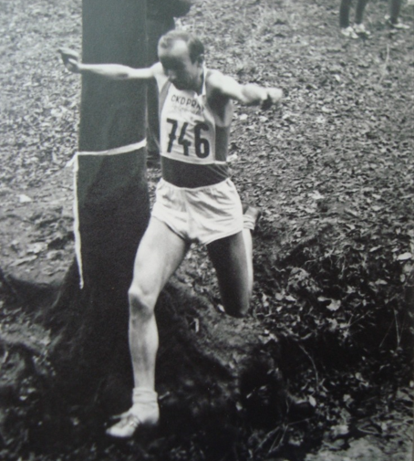
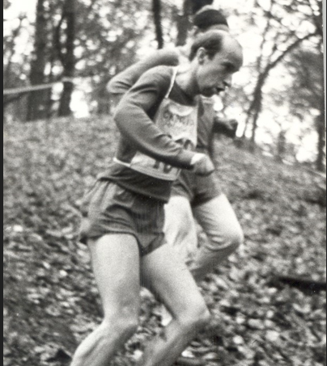
Jan Kervitcer v Kunraticích v roce 1969 … … a v roce 1978
Honza Kervitcer to v Kunraticích dotáhl na 48 startů, ale mohlo jich být i víc, kdyby v polovině 60. let v několika ročnících jako člen pořadatelského oddílu Spartak Praha 4 nedal přednost organizaci závodu. V těch letech se věnoval přípravě trati, během závodu dělal kontrolu na trati, jednou dokonce hlasatele, a na vlastní start mu prostě nezbyl čas. Pro Velkou kunratickou toho vykonal hodně, je i spoluautorem několika ročenek k jubilejním ročníkům.
Honza patřil ke kvalitním výkonnostním běžcům, ale více vynikl jako trenér. Trenérské práci se věnuje už od svých dvaceti let a během neuvěřitelných šedesáti let vychoval spoustu výborných běžců. Mnozí se dostali do československé a české reprezentace, řada z nich vynikla i ve Velké kunratické, jak v mládežnických, tak v hlavní kategorii. Za zaznamenání stojí úspěchy Honzova „Kerteamu“, z nichž vypíchneme jen ty, které mají souvislost s Velkou kunratickou. V letech 2007 až 2024 Honzovi svěřenci vyhráli v Kunraticích hlavní kategorii celkem 9x: šestkrát triumfoval Jan Procházka, po jednom vítězství mají Petr Pechek, Marek Chrascina a Daniel Bolehovský. Pechek k tomu přidal dvě prvenství mezi veterány, kde bude i v příštích letech patřit k favoritům. Na poslední VK v roce 2024 Honzovi svěřenci obsadili v hlavním závodě první tři místa v pořadí Bolehovský – Glonek – Hudec, přičemž Daniel Bolehovský se stal ve věku 19 let nejmladším vítězem Velké kunratické v její historii. Velkého úspěchu dosáhl v roce 2019 Marek Chrascina, když pouhých 14 dní po svém vítězství ve Velké kunratické vybojoval na MS v běhu do vrchu v Argentině bronzovou medaili a v soutěži družstev s národním týmem České republiky dokonce medaili zlatou. Mnozí Honzovi bývalí svěřenci běhají Velkou kunratickou už jako veteráni, příkladem je maratonec Jiří Suchý (1959, osobní rekord 2:26:01), který soupeří s Milošem Smrčkou o přední místa ve své věkové kategorii. Nesmíme zapomenout ani na Honzovy nejmladší svěřence: kategorii dorostu vyhrál v Kunraticích v roce 2022 Jonáš Kopecký, v roce 2024 Adrian Hronek.
Dávné vzpomínky z tréninkových deníků
Honza Kervitcer nám dal nahlédnout do svých deníků, z nichž si dovolíme citovat. První ukázka je z roku 1959, to byl první Honzův start v Kunraticích na dorostenecké trati.
„8. listopadu – neděle. XXVI. ročník Velké kunratické. ½ hodiny lehký rozklus (8:00 – 8:30 hod.), před startem jsem s Korandou naklusal ještě asi 4 km. Můj závod byl v 10:15 hod. Běžel jsem se startovním číslem 89 a hned za mnou startoval s Korandou můj největší soupeř Mikyska. Měl jsem velmi rychlý start a riskantním během jsem se dostával dopředu, ovšem měl jsem dost smůlu, totiž při sbíhání s kopce jsem nemohl předběhnout a ztratil jsem cenné vteřiny. Pověstný kunratický kopec se mi celkem povedl (předběhl jsem asi 10 závodníků), nahoře jsem měl však tak tvrdé nohy, že jsem vůbec nemohl využít své rychlosti při běhu s kopce (zde mě také asi dohnal Mikyska); asi 50 m před cílem mě prudkým finišem Mikyska předběhl. Za celý závod jsem se ani jednou neohlédl.“
Druhá citace je z roku 1964: „8.11. neděle. XXXI. ročník Velké kunratické: 17. – 13:03,6. Můj první start na mužské trati a třetí vůbec. Podmínky: celkem zima (3 – 5°C), běžel jsem proto v jégrovkách. Dost rozvodněný potok. Rozcvičení: nadvakrát, poprvé s dorostenci proklusání jejich trati, podruhé proklusání zbytku hlavní trati a rovinky – skončil jsem 10 minut před startem. Závod: Měl jsem startovní číslo 164 a hned za mnou vybíhal velký favorit Jílek, což byla značná výhoda; začátek jsem také běžel naplno a Jílek mě vzal až při seběhu z Hrádku, s menším odstupem jsem běžel za ním až na konec posledního kopce, zde mi ale utekl, neměl jsem tu tolik sil; jinak jsem ale spokojen, tak dobrý čas jsem ani nečekal a v cíli jsem byl celkem čerstvý, lehký výklus jsem si dal domů. Ostatní kluci z mé skupiny běželi Kunratickou poprvé, jejich časy jsou celkem solidní.“
| Poslední Honzův start v Kunraticích je z roku 2014, od té doby nese rodinný prapor jeho syn Jan Kervitcer mladší, také už veterán. Jsem moc rád, že Honza vyslyšel mou výzvu k zaslání svých vzpomínek, za které moc děkuji, rovněž za fotografie, z nichž dvě jsme vybrali k otištění. Nepochybuji, že stejnou radost udělají i našim čtenářům. | LS |
Historický kvíz z VVK č. 6 má dva úspěšné řešitele
Ještě jednou se vracíme k otázkám z historického kvízu z VVK č. 6. Abyste se dostali „do obrazu“, zopakujeme otázky, které byly položeny.
V čísle 6 VVK na straně 12 byla otištěna tabulka prvních 10 borců kombinovaného hodnocení veteránů při jubilejním 50. ročníku Velké kunratické, jejichž jména zde zopakujeme: 1. Lubomír Čuhel (1916), 2. Stanislav Otáhal (1913), 3. Josef Pejsar (1923), 4. Jiří Statečný (1925), 5. Bedřich Klimeš (1921), 6. Jaroslav Cihlář (1924), 7. Karel Šerpán (1931), 8. Přemysl Novotný (1918), 9. František Král (1918), 10. Václav Chudomel (1932). Vaším úkolem, a to úkolem nikterak snadným, bylo zodpovědět tři otázky:
1/ Kteří borci z tabulky z roku 1983 dokázali Velkou kunratickou vyhrát (kolikrát)?
2/ Kteří borci z uvedené tabulky dokázali vyhrát kategorii veteránů (kolikrát)?
3/ Kteří borci z uvedené tabulky se aktivně zúčastnili olympijských her (kdy a kde)?
Správné odpovědi jsou následující:
1/ Z uvedených borců dokázali Velkou kunratickou vyhrát Lubomír Čuhel (v roce 1945), Stanislav Otáhal (1936 a 1940), František Král (1938 a 1939) a Václav Chudomel (1963 a 1965). Jde o celkové vítěze, nikoli vítěze ve věkových kategoriích.
2/ Mnozí z vyjmenovaných borců byli úspěšní i v kategorii veteránů, ale vyhrát ji dokázali pouze František Král (1969) a Karel Šerpán, ten dokonce 10x za sebou (v letech 1972 až 1981). Kdo hledal odpověď v ročence k 70. VK v roce 2003, našel mezi vítězi též Jiřího Statečného (1978), ale bylo to vinou chybného přepisu Šerpánova času 14:22,6 do veteránských výsledků (omylem se tam objevil čas 17:22,6). Mnozí borci uvedení v tabulce se však stali vítězi kombinovaného hodnocení, někteří opakovaně: Stanislav Otáhal (1974, 1976, 1978, 1982), Jaroslav Cihlář (1977, 1979, 1985), Lubomír Čuhel (1980, 1981, 1983, 1986, 1987, 1988, 1989), Josef Pejsar (1984, 1991, 1992, 1994), Karel Šerpán (1990).
3/ Olympijských her se zúčastnili Stanislav Otáhal (1936 Berlín – 800 m), Jaroslav Cihlář (1956 Melbourne – cyklistika) a Václav Chudomel (1964 Tokio – maraton).
Uznáváme, že otázky nebyly snadné a ke správným odpovědím bylo nutné nahlédnout do starých ročenek, případně podrobně prolistovat předchozí čísla Veterána VK.
Poprvé na naše otázky nikdo nezareagoval, po další výzvě v čísle 7 jsme obdrželi dvě správné odpovědi (až na několik drobností – viz výše uvedená nesrovnalost s Karlem Šerpánem z roku 1978), a to od Karla Schestaubera a Tomáše Seemana. Oběma vítězům gratuluji a děkuji za odpovědi. LS
Poděkování MUDr. Karlu Fojtíkovi – otci prvního vítěze
Velmi děkuji všem čtenářům za pozitivní reakce na předchozí 7. číslo Veterána VK, za všechny vaše maily, podněty a případné doplňující informace. Ta asi nejzajímavější přišla od pana MUDr. Karla Fojtíka (nar. 1941), dosud aktivního lékaře na Ortopedické klinice na Bulovce, který potvrdil informaci o svém otci, vítězi 1. ročníku v roce 1934. Napsal, že údaje o jeho závodech (viz VVK č.7, strana 6) souhlasí, že se dal i na chůzi a stal se mimo jiné mistrem republiky na trati Praha – Poděbrady. Upřesnil i datum a místo otcova úmrtí – padl na barikádě na Žižkově 7. května 1945. Sám MUDr. Karel Fojtík běhal Velkou kunratickou, stal se veteránem a naposled startoval v roce 2020, ve svých 79 letech!
Veterán Velké kunratické
Časopis určený veteránkám, veteránům a všem příznivcům legendárního závodu
Luděk Sedlák, Týřovická 1346/6, 153 00 Praha 5 – Radotín, ludek.sedlak@gop.cz /
Pište nebo volejte! / 728 437 333 / Číslo 8 – květen 2025 / Příští číslo: listopad 2025